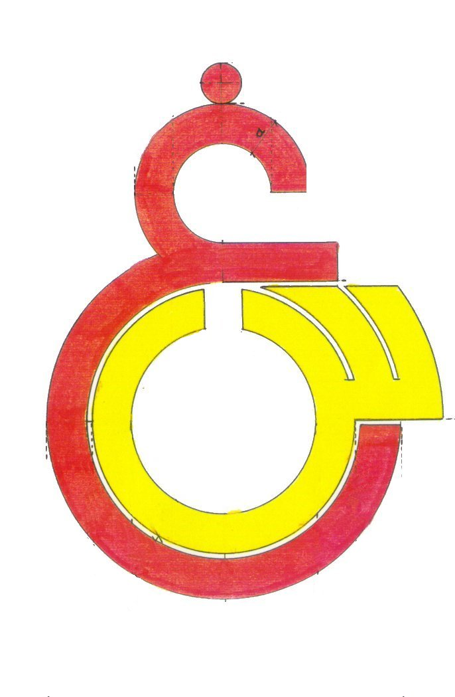

Last 5 Match
-
History of Galatasaray SK
Galatasaray SK was founded in October 1905 (the exact day is disputed, but is traditionally accepted as "17 Teşrinievvel 1321" according to the Rumi calendar, which corresponds to "30 October 1905" according to the Gregorian calendar) by Ali Sami Yen and other students of Galatasaray High School (a high school in Istanbul which was established in 1481) as a football club. Ali Sami Yen became Galatasaray SK's first president and was given the club's membership number "1". The team's first match was against Cadi-Keuy FC and Galatasaray won this match with a score of 2 – 0. There were discussions about the club's name, in which some suggested Gloria (victory) and others Audace (courage), but it was decided that its name would be Galatasaray.
The name Galatasaray itself comes from that of Galatasaray High School, which in turn takes its name from Galata Sarayı Enderûn-u Hümâyûn (Galata Palace Imperial School), the name of the original school founded on the site in 1481, and which in turn took its name from the nearby medieval Genoese citadel of Galata (the modern quarter of Karaköy) in the Beyoğlu (Pera) district of Istanbul. Galatasaray literally means "Galata palace".
-
Crest and Color
Galatasaray's first emblem was drawn by 333 [School Number] Şevki Ege. This was the figure of a spread-winged eagle with a football in its beak. The eagle was a model emblem that Galatasaray dwelled on in the beginning. But when the name did not attract too much interest, Şevki Ege’s composition was pushed aside. It was replaced by the current design in the 1920s. This replaced in 1925 by the current "Ghayn-Sin" crest, which are the first two Arabic letters of "G"alata "S"aray, designed by Ayetullah Emin.